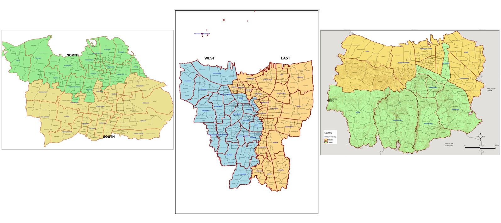
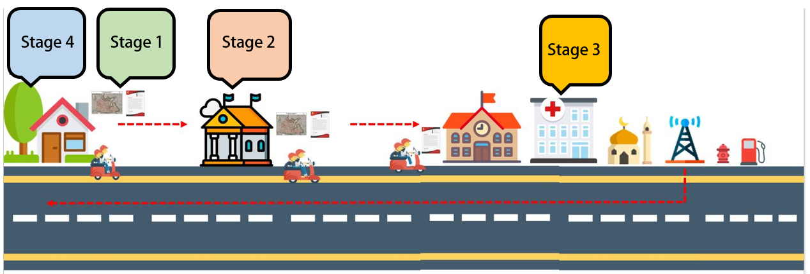
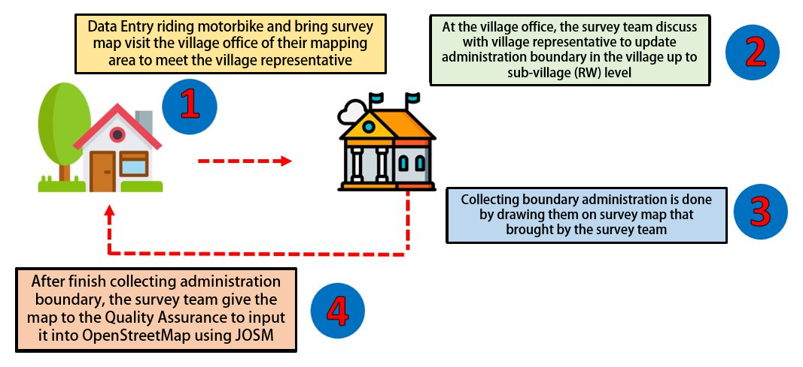
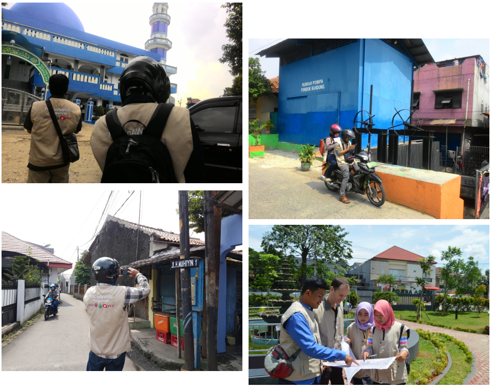
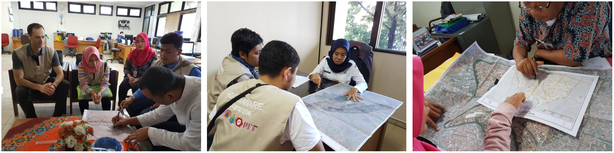
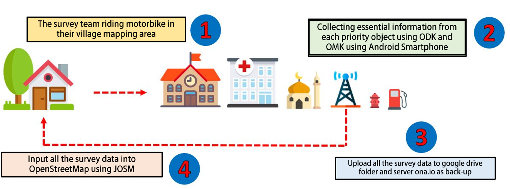

Data Collection Methodology
Download page as PDFObjectives:
- Understand Data Collection Preparation
- Understand Data Collection Workflow
- Knowing Tools that used in Data Collection
- Understand How to Collect Data in the Field
Data collecting or commonly known as field survey is an important aspect in mapping activity especially in disaster management. Even though technology advancement nowadays such as aerial and satellite imagery is capable to help us to map remotely, there are some information that only can get by going to the mapping area. Therefore, field survey is the only option which can help us to get some specific information that we need.
When doing field survey, you need to know the proper methodology to do it. This is an important thing as it will help you to complete your field survey efficiently and effectively. Moreover, a good data collecting will gives you good output both from quality and quantity aspect. In this chapter, you will learn about the methodology and workflow when doing field survey particularly in HOT-PDC InAWARE project.
I. Data Collecting Preparation
Before doing mapping activity for HOT-PDC InAWARE, Humanitarian OpenStreetMap Team (HOT) Indonesia have made organized and systematic plan. This needs to be done so the mapping activity can be run efficiently and effectively and also to maintain data quality. There are some preparation activities before going to the field as follows:
- Divide Survey Area and Survey Team
Dividing survey area means to narrow the focus for each survey team whereas they will responsible for certain areas, as explained further in Survey Methodology for OpenStreetMap module, that lead by 2 (two) Mapping Supervisor who is responsible for all mapping areas in his/her zone. Moreover, determining field survey team need to consider both technical aspect and local knowledge of the mapping area for each member of the team.
The importance of technical aspect such as have good understanding to use the survey tools while local knowledge such as know the mapping area well and can speak in local language will become a benefit that can help them to get information from people and community in their survey area.

Divided Area in HOT PDC InAWARE Project Cities
- Manage The Survey Permit Letter
In an activity that involves multi-stakeholder and organizations and has wider scope of mapping area, survey permit letter is a important thing to have before going to the field. This letter usually issued by Local Government or Local Disaster Management Agency (BPBD) and relatively more trusted by the local people rather than permit letter from HOT. Therefore, you can get the information easily from the people and local community if you bring the permit letter when doing field survey because they already know and understand your mission coming to their area.
- Determine Mapping Objects
Before doing field survey, it would be better if you discuss with the local government about what information and object they need to be collected in their area. Thus, this will lead you to determine what objects that should become priority to be mapped. Each city / mapping area will has their own identity in many aspects such as topography, types of hazard, and social-economic. Those aspects will be considered to determine priority objects and information that need to collected in the field. For instance, place of worship, HOT only mapped big mosque and church in DKI Jakarta while in Semarang, any mosque and church have to be mapped regardless its size. According to local disaster management agency in DKI Jakarta, if the flood happened, they only use big mosque as evacuation shelter because it can accommodate many affected people while Semarang use all of their place of worship including mosque and musala (small mosque) as evacuation shelter because there always small scale hazard happen and they do not need a big mosque as a shelter for affected people but instead they use any mosque closest to hazard area.
Generally, the purpose to determine priority mapping objects based on need of the local government is to make sure the output of this mapping can be used for them and also local people and communities. Thus, it will make the output become more sustainable.
- Mapathon and Survey Team Training
Survey team training is an internal activity where Quality Assurance and Data Entry will be taught about technical things that they have to know during the mapping activity such as using survey application in their smartphone, using survey map, upload survey data to the server, input survey data into OSM using JOSM, validate the survey data, etc. Moreover, conducting mapathon, a remote mapping activity, with local universities could help to complete the baseline data such as roads and building footprint before the survey teams hit the field.
II. Data Collection Workflow
Field survey activity does not begin in mapping area, instead it started from basecamp until come back to basecamp before doing data input. The picture below shows the data collection workflow:

Data Collection Workflow
- Stage 1
The survey team, consisted with 2 (two) Data Entry riding a motorbike from basecamp to their mapping area village office. They bring A Survey Permit Letter which issued by the BPBD and Survey Map with them.
- Stage 2
First stop is the village office. Then, they will meet with the village office representative to asking permission doing field survey in the village for couple days ahead. They also discuss with the representative to update the village boundary administration up to sub-village level (RW) using the survey map.
- Stage 3
After finished updating village boundary, the survey team continue their field survey to collect and map all the priority objects and critical infrastructures in the village. They use survey application in their smartphone to collect the information for the objects. The survey team will be doing this activity for 2-4 days in one village.
- Stage 4
After they finished, they have to upload their survey data into the server (ona.io) then back to the office to input all field survey data using JOSM dan upload them to the OpenStreetMap.
The next step is Quality Assurance (QA) will download the data and check its quality based on topology and information (tag). After that, the Mapping Supervisor will re-check the validated data from Quality Assurance. Therefore, the data quality keep maintained before re-upload back to the OpenStreetMap and can be used by other users. The material and explanation related to OpenStreetMap data quality assurance will explained further in other modules.
III. Data collection Tools
When doing field survey, the survey team need to know all the tools that they use in the field. Availability of the tools is a vital factor that can decide the field survey process and output. These are the tools that we use when doing field survey in the field:
- Smartphone
This is the most important tools when doing field survey. Please note when choosing smartphones that will be used, you need to see its specification such as storage capacity, RAM capacity, GPS location service and more importantly its system has to be an Android. Moreover application that need to be installed such as OpenMapKit, ODK Collect dan OSM Tracker.
- Power Bank
This tools also support tools in field survey activity. When doing field survey, the team always activate GPS location and internet connection in their Smartphone. Therefore the battery capacity will decreasing fast. Power bank is a solution for the problem and make sure the survey team can finish their survey without run of battery problem.
- Stationery
This tool will help the survey team to write any information in the field. Moreover, it will help them to draw administration boundary of their mapping village on survey map. The stationery such as color pen, ruler, and notes.
- Survey Map
Survey map can help the survey team to identify their mapping area. Thus, it used as a media to update boundary administration of the mapping area. How to make a map for field survey explained further in Make Survey Map using QGIS module.
- Survey Permit Letter
As mentioned before, the survey permit letter is a vital thing to have before doing field survey. This letter should be issued by local government such as village office or local disaster management agency (BPBD) so could be help the survey team to asking permission and communicate with the local people and get the information that need to be collected in the field.
- GPS
GPS is an alternative tool if your smartphone has trouble and can not be used to colleting data. Moreover, GPS can be used as a validation tool to re-check the data from the field.
IV. Field Data Collection
- Infrastructure Data Collection
When doing data collection in the field, the survey team have to use android smartphone which has installed applications as follows:
- ODK Collect
This application is used to gathering information of objects that the survey team collection in the field. You won’t need to print dozen of paper for survey form. Moreover, this application allows you to take pictures and coordinate location of your object.
- OpenMapKit (OMK)
OMK is an extension application for ODK Collect where allow the survey team to give information based on OpenStreetMap tag standard. This application also can allow you to add nodes of object on satellite imagery that have been added before in OMK. Those information will be saved into ODK Collect and later being uploaded into server such as ona.io or others.
- OSMTracker
This application help the survey team to record field survey progress and coverage of their mapping area. OSMTracker also has function to record survey track similar with conventional GPS and show it on OpenStreetMap background map. OSM Tracker also can take pictures, notes, or short video to mark your objects.
Overall, collecting data for infrastructure is done by tracking all area of the team survey village are and collect all priority objects and its essential information in the survey area both by visual assessment and interact with local people. After that, the field survey will be uploaded to google drive folder that has been made before by Quality Assurance and to ona.io server as a backup data if there is something happened with the data such as accidentally removed or deleted. Last step, input all the field survey data using JOSM. Below is a workflow for doing data collection for infrastructure:

Workflow of Infrastructure Data collection
Notes :
- Infrastructure Data collection usually takes 2-4 days to be finished for 1 village.
- Duration of field survey depends on area size and data density in the mapping area.
- All field data survey MUST BE UPLOADED daily every day to ke google drive dan ona.io server and deleted in the smartphone after that. This need to be done to anticipate smartphone memory running of capacity and as a report to Quality Assurance who will be doing validation to the data.
- If there is rejection from the local people, the survey team should ask help from local government or BPBD to escort them in the field.

Documentation of Infrastructure Data Collection
- Administration Boundary Data Collection
Collecting administration boundary data is slightly different than infrastructure. If the infrastructure data is collected using ODK Collect and OMK application in smartphone, collecting administration boundary use survey map that made by Mapping Supervisor.
Collecting administration boundary need communication skill and personal approach to village representative and local people. Generally, collecting administration boundary is done by coming to the village office with bring survey map and discuss it with village representative up to sub-village (RW) boundary. The village representative review the survey map and help the team survey by drawing the administration boundary on the map.

Documentation of Administration Boundary Data Collection
After the administration boundary have been updated, the survey team give the map survey to the Quality Assurance to input into OpenStreetMap using JOSM. For further explanation about how to input administration boundary using JOSM can be seen in Drawing Administration Boundary using JOSM module.
The picture below describes workflow about collecting data for administration boundary:

Workflow of Administration Boundary Data collection
Notes : Collecting data of administration boundary have to involve village representative. If the village representative does not know the boundary, please ask the local head of mapping area (RW) to come to the village office. If the local head of mapping area can not come to the village office, the survey team HAVE TO visit his/her house and bring the survey map to discuss about the administration boundary in their area. If the local head refuse to help, the survey team should ask local disaster management agency (BPBD) to help them collecting administration boundary in that area.
SUMMARY
You have finished workflow and methodology of data collection when doing the field survey. Knowing all the steps and methodology, you can do the field survey effectively and efficiently so the result can get as expected and have good quality and quantity based on OpenStreetMap standard.